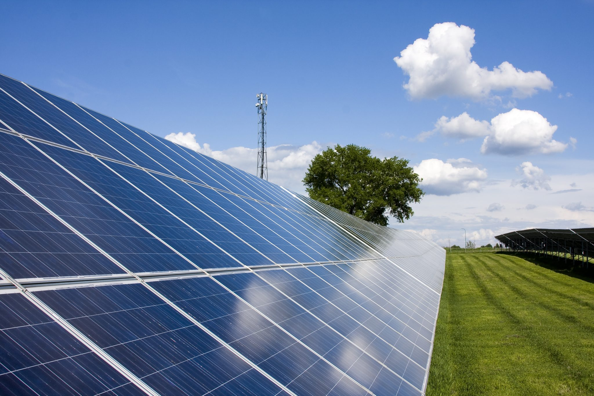
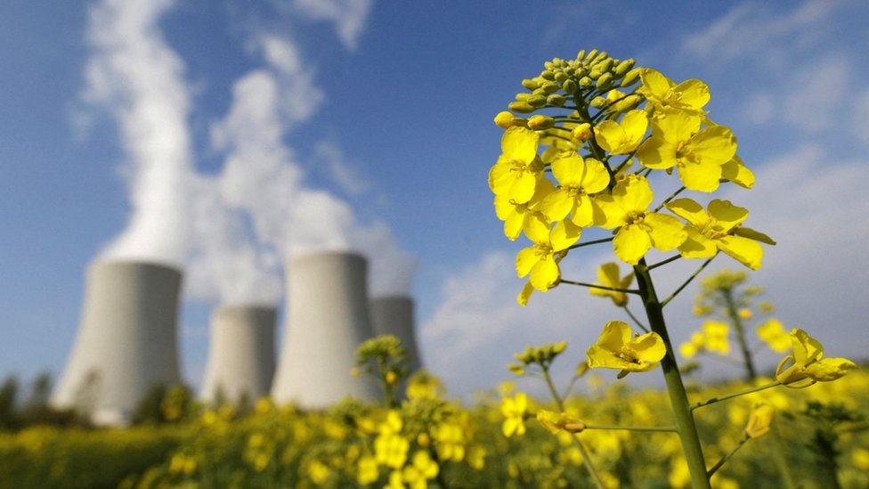

Tipos de energia renovável
Hidráulica
A energia hidráulica, que é a principal fonte de energia utilizada no Brasil, é gerada pela força da queda d'água nas barragens dos rios, movendo as turbinas. 
No entanto, em regiões com períodos de seca, pode haver redução na produção, o que resulta em aumento no valor da conta de luz. Além disso, a energia hidráulica causa impactos ambientais na área de instalação, prejudicando a flora e fauna local e deslocando moradores da região.
Eólica
A energia eólica utiliza a força do vento para gerar energia elétrica por meio dos aerogeradores, equipamentos que realizam a conversão de forma simples, rápida e não poluente. É uma opção viável para locais com ventos favoráveis e onde a rede elétrica convencional não é acessível. 
No entanto, as turbinas eólicas podem gerar poluição sonora devido ao ruído que produzem, sendo essa uma desvantagem dessa tecnologia. Além disso, há preocupação com o índice de mortalidade de pássaros e o possível aumento da temperatura média local.
Solar
A energia solar é captada por painéis solares e convertida em energia elétrica por meio de inversores solares, que transformam a corrente contínua em corrente alternada. É uma opção viável, pois o recurso solar está disponível diariamente, embora com menor capacidade em dias chuvosos.
No entanto, o custo inicial de aquisição ainda é elevado e não há incentivos governamentais suficientes para a ampliação da implementação de sistemas fotovoltaicos em residências e estabelecimentos.
Biomassa
No entanto, o custo inicial de aquisição ainda é elevado e não há incentivos governamentais suficientes para a ampliação da implementação de sistemas fotovoltaicos em residências e estabelecimentos.
Um exemplo é a produção de etanol a partir da cana-de-açúcar, milho e outras fontes. O biodiesel é outro exemplo, produzido a partir de gorduras animais ou óleos vegetais, como óleo de soja, amendoim, algodão, dendê, girassol, mamona, entre outros.
Esses biocombustíveis contribuem para a redução das emissões de gases de carbono na atmosfera, minimizando os problemas do efeito estufa e do aquecimento global, além de apresentarem baixo teor de enxofre. No entanto, eles podem causar desmatamento e estimular o crescimento de monoculturas.
No entanto, existem algumas desvantagens nesse tipo de fonte de energia, como o impacto no consumo de água e a ocupação de áreas que poderiam ser destinadas ao cultivo de alimentos.
Maremotriz
A energia maremotriz é gerada a partir das marés ou correntes oceânicas, de forma sustentável, requerendo apenas uma central próxima ao oceano. É utilizada principalmente para abastecer cidades costeiras, mas não permite uma produção constante devido à irregularidade do ciclo das marés. 
Nuclear
A energia nuclear utiliza urânio e tório como recursos para a geração de energia. Ao contrário do que muitos pensam, seu processo não é semelhante ao dos combustíveis fósseis, pois não emite gases de efeito estufa. No entanto, apresenta alto risco de acidentes nucleares e possui um custo mais elevado. Além disso, a energia nuclear não depende de fatores climáticos.
geotérmica
A energia geotérmica é obtida através da passagem de um fluido pela zona quente da Terra, aquecendo-o e convertendo-o em vapor. Esse vapor, com alta energia interna, é utilizado em turbinas para gerar energia elétrica a partir da energia mecânica. 
A energia geotérmica é amplamente utilizada para várias finalidades, como geração de eletricidade para ar-condicionado no verão, aquecimento no inverno, aquecimento de água, geração de eletricidade em usinas e energia para indústrias. No entanto, sua produção ainda não é ampla no Brasil.